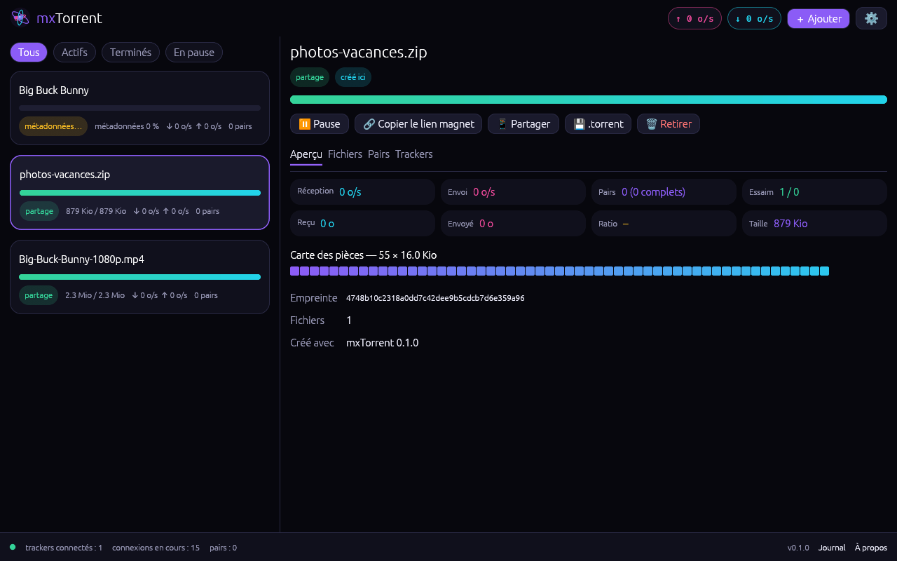
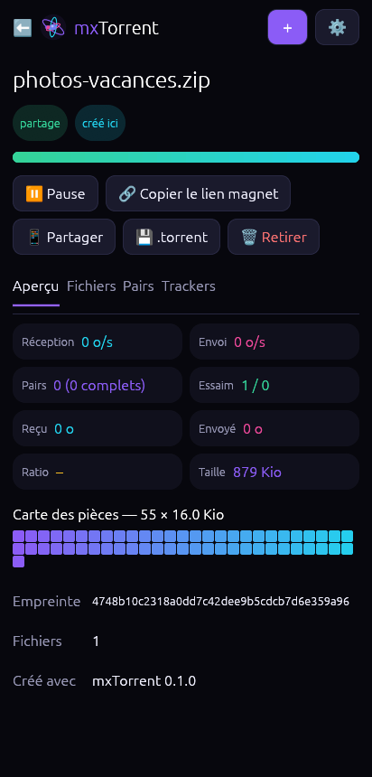

Liens magnet et .torrent
Collez un lien, une empreinte, une URL ou déposez un fichier. Les métadonnées arrivent des pairs (BEP 9), sans serveur.
Rust · WebAssembly · egui · WebRTC
Un client BitTorrent complet qui tourne dans votre navigateur, sur ordinateur comme sur téléphone. Les pairs se parlent directement, chiffré, en WebRTC.
Fonctionnalités
Liens magnet, fichiers .torrent, partage instantané, choix des fichiers, aperçu des vidéos : mxTorrent fait le travail d'une application de bureau, sans en être une.
Collez un lien, une empreinte, une URL ou déposez un fichier. Les métadonnées arrivent des pairs (BEP 9), sans serveur.
Déposez des fichiers : mxTorrent crée le torrent, le partage aussitôt et vous donne un lien et un QR code à scanner.
Les octets passent directement d'un navigateur à l'autre, chiffrés par WebRTC (DTLS). Le tracker ne fait que présenter les pairs.
Sélection des pièces, demandes en file, fin de partie, vérification SHA-1 de chaque pièce : le vrai protocole BitTorrent.
Ouvrez une vidéo, une image ou un PDF dès qu'il est complet, ou enregistrez-le. Ne téléchargez que les fichiers choisis.
Même protocole et mêmes trackers que webtorrent.io, Instant.io ou WebTorrent Desktop : vous rejoignez des essaims existants.
Les torrents avec des sources HTTP (BEP 19) se téléchargent même sans pair : mxTorrent mélange les deux.
Installez-le depuis le navigateur : icône, plein écran, liens magnet et fichiers .torrent ouverts directement par mxTorrent.
Fonctionnement
Le lien contient l'empreinte SHA-1 du torrent et des trackers WebSocket. mxTorrent n'a besoin de rien d'autre.
Votre navigateur annonce des offres WebRTC ; le tracker les relaie aux autres membres de l'essaim, qui répondent.
Un canal de données chiffré s'ouvre entre vous et chaque pair, à travers les box et les NAT grâce à STUN.
Blocs de 16 Kio demandés à plusieurs pairs, pièces vérifiées par SHA-1, puis partagées à leur tour. Le cube se remplit.
Aperçu
La même application s'adapte à l'écran : deux colonnes sur ordinateur, une colonne et un bouton flottant sur téléphone.


Sécurité et vie privée
| mxTorrent | Client classique | |
|---|---|---|
| Installation | Aucune | Programme à installer et mettre à jour |
| Téléphone | Oui, même navigateur | Application séparée, si elle existe |
| Accès au système | Bac à sable du navigateur | Accès complet au disque |
| Chiffrement | Toujours (DTLS) | Optionnel |
| Pairs joignables | Réseau WebTorrent (WebRTC) | Tout le réseau BitTorrent (TCP/UDP) |
Installer
mxTorrent est une Progressive Web App : elle s'installe depuis le navigateur, se lance en plein écran et fonctionne même hors ligne pour ses fichiers déjà téléchargés.
mxTorrent est installé. Bon partage !
FAQ
Ceux dont l'essaim compte des pairs WebRTC (WebTorrent, Instant.io, mxTorrent…) ou des sources web. Un navigateur ne peut pas ouvrir de connexions TCP ou UDP brutes : les pairs qui n'utilisent que ces protocoles lui restent invisibles.
Dans la mémoire de l'onglet, tant qu'il est ouvert. Quand un fichier est complet, vous l'enregistrez ou l'ouvrez en un clic. Gardez l'onglet ouvert pour continuer à partager.
Quelques centaines de mégaoctets passent très bien partout ; jusqu'à environ 2 Gio sur ordinateur. Sur téléphone, la mémoire disponible dépend de l'appareil.
BitTorrent est une technologie légale, utilisée pour distribuer des logiciels libres, des films libres de droits, des jeux de données… Partagez uniquement des contenus dont vous avez les droits.
Rust donne un moteur rapide et sûr, compilé en WebAssembly. egui dessine toute l'interface dans un canevas : le même code donne la même application sur ordinateur et sur téléphone.
Oui : le dépôt contient mxtorrent-tracker, un tracker WebSocket compatible WebTorrent. Lancez-le, puis ajoutez son adresse wss:// dans les réglages de l'application.
Comme dans tout réseau pair à pair, les pairs avec qui vous échangez voient votre adresse. Les trackers aussi. Utilisez un VPN si c'est un souci.
L'application et ce site se lancent hors ligne une fois visités. Pour échanger, il faut évidemment du réseau.
Ouvrez l'application, déposez un fichier, envoyez le lien. C'est tout.